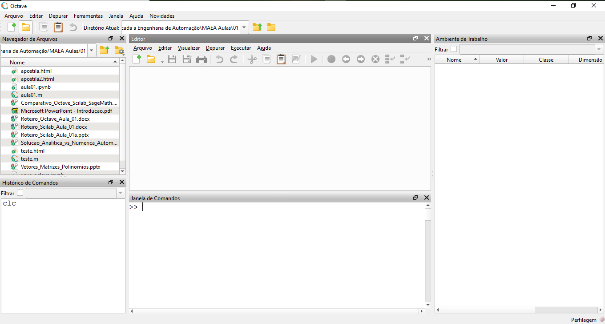

1. Componentes do Octave GUI
Demonstração rápida do GNU Octave: janela de comandos, editor, histórico, ambiente de trabalho, navegador de arquivos e ajuda. Ajuste de layout e preferências.


As janelas podem ser omitidas ou visualizadas a partir da barra de tarefas em Janelas>>Exibir Editor por exemplo.
2.Características da Linguagem
Resumo objetivo:
- Tipagem: dinâmica (como Python) — diferentemente de C (estática).
- Paradigma: interpretada, voltada a operações matriciais e cálculo numérico (sem compilação explícita como em C).
- Sintaxe: mais direta para álgebra matricial que C; é similar ao MATLAB em muitas construções.
Exemplo: multiplicação de matrizes é direto — sem loops explícitos:
% Multiplicação matricial (Octave/Matlab)
A = [1 0 1; -2 1 0; 1 2 2];
B = [1 1 1; -1 5 4; 0 2 1];
C = A * B;
size(C)
3. Constantes, Variáveis e Números Complexos
Trabalhando com números complexos, parte real, imaginária, módulo e fase.
% Números complexos e operações
x = 3 + 4i;
real_part = real(x);
imag_part = imag(x);
modulo = abs(x);
fase = angle(x);
% Funções trigonométricas
s1 = sin(pi/2);
c1 = cos(pi);
t1 = tan(pi/4);
Exercício: calcular módulo e fase de z = -2 + 2i.
z = -2 + 2i;
abs(z)
angle(z)Valores especiais:
% Inf e NaN
1/0 % Inf
0/0 % NaN
sqrt(-1) % se não usar complexos, retorna NaN
4. Entrada e Saída
Leitura via keyboard e exibição formatada.
% Entrada e saída
x = input
4. Entrada e Saída
Leitura via keyboard e exibição formatada.
% Entrada e saída
x = input
5. Ambientes Textuais e Gráficos
Entrada e saída
x = 0:0.1:2*pi;
y = sin(x);
plot(x, y)
title('Seno de x')
xlabel('x'), ylabel('sin(x)')